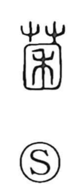

菌

Kun: | On: kin
fungus ・ mushroom ・ bacterium ・ germ
Explanation
A phono-semantic character: the plant radical signals living growth, while the phonetic element marks the on reading kin and hints at things that gather out of sight. The Shuowen already defines it as an “earth-borne fungus” (a kind of ground mushroom), evoking organisms that spring up quietly in warm, humid places. With the later discovery of microscopic life, the character’s scope naturally broadened to include bacteria—single-celled organisms visible only through a microscope.